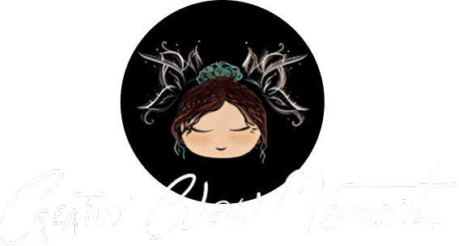
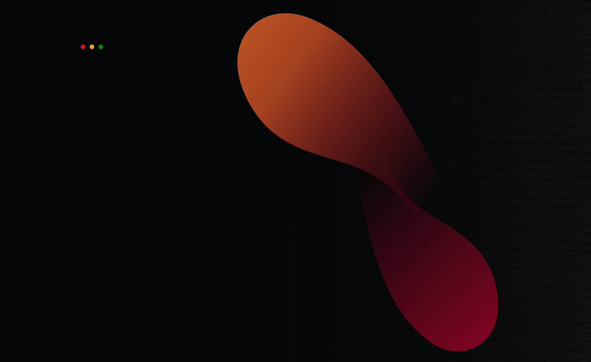
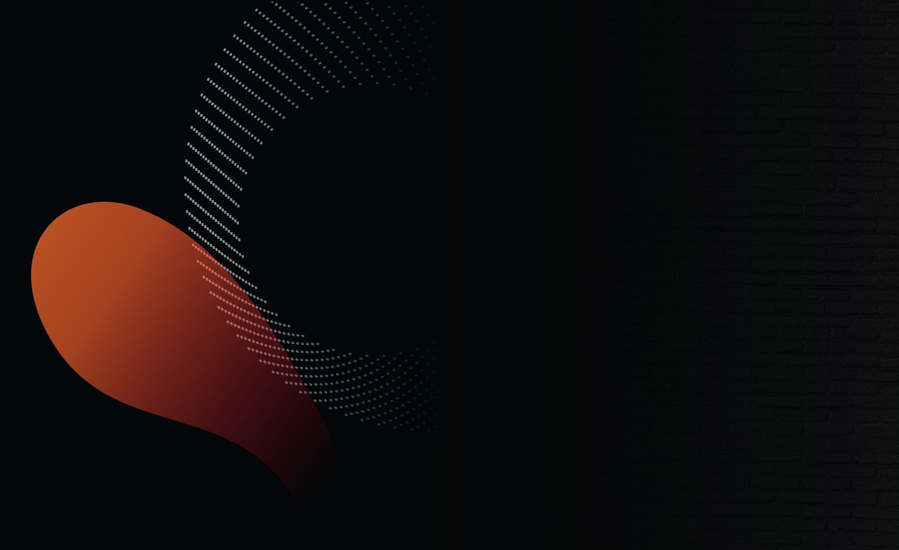
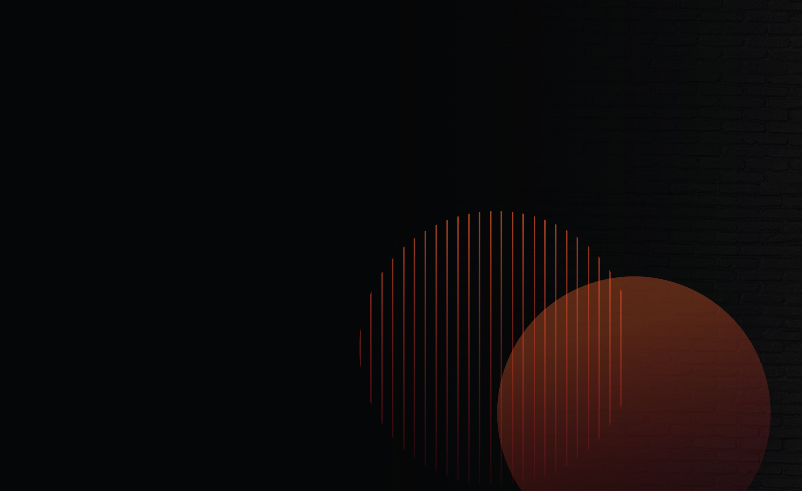

Laceels - Creatin' Glow Moments

Illustrator & Designer & Creative Developer

WhatsUpp
Master's thesis with RISC Software GmbH
WhatsUpp – Exploratory Data Visualization
Designed a web-based interactive visualisation for exploring topics and sentiment in online news from German-speaking regions. The project connects NLP-based analysis with a visual interface for exploratory data analysis.
- Role
- Research, Design Concept, Data processing, Prototype Implementation, and Evaluation.
- Focus
- Interactive data visualisation, topic exploration, sentiment analysis, online news analysis, user-centred design, and web-based interfaces.
- Outcome
- Interaction design concept and functional web prototype.
Design Concept
Implemented Prototype

MindCraftAI
Mindcraft Prototype
Semester Project
MindcraftAI
MindCraftAI is an AI-supported creative planning tool that combines interactive mind maps and moodboards in one web application. Users can generate, edit, organise, and export visual ideas through direct interactions or chat-based commands.
- Role
- Concept, UX/UI design, frontend, interaction design, testing, documentation
- Focus
- AI-assisted creativity, mind mapping, moodboards, chat-based interaction
- Outcome
- Functional web prototype for AI-supported idea generation and project planning

FigmaAIPlugin
Semester Project
FigmaAI Plugin
UXcuseMe is an AI-powered Figma plugin that supports early-stage UX design workflows directly inside the design environment. It helps users structure research, analyse qualitative data, generate proto-personas, and receive contextual design feedback.
- Role
- Concept, UX/UI design, plugin development, prompt design, user testing
- Focus
- AI-assisted UX design, human-centered design, persona-based feedback, Figma plugin workflows
- Outcome
- Functional and evaluated Figma plugin with four AI tools: Research, Analysis, Feedback, and AskAI
About me
Ladan Ghezel
I am a designer and creative developer with a background in Interactive Media and Media Technology, focused on UX/UI design, data visualisation, AI-assisted workflows, and prototype development. My work connects visual clarity, user-centred thinking, and technical implementation to build functional, exploratory web-based tools.
UX/UI Design · Data Visualisation · Creative Coding · AI Tools · Web Prototyping